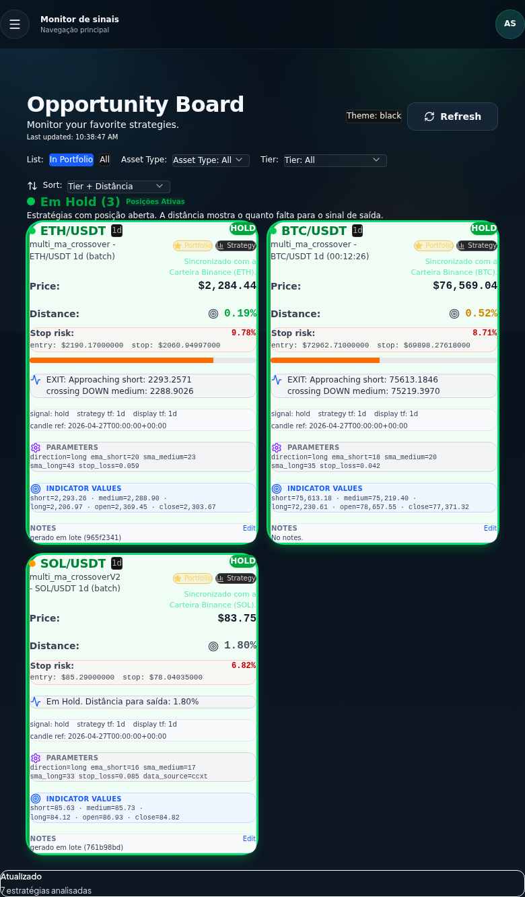
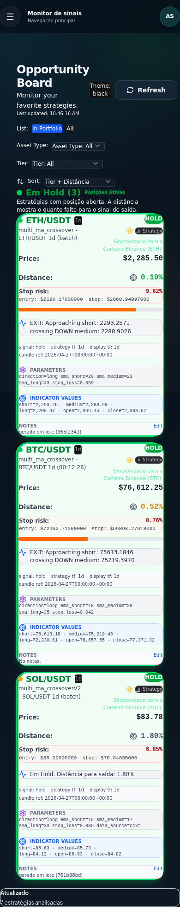
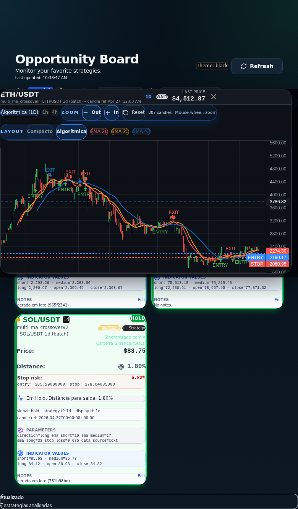

Informação demais
Notícia, gráfico, canal, influenciador e call competem pela sua atenção.

Beta fechado para investidores em cripto
Menos ruído, mais critério: um monitor para acompanhar sinais, contexto e risco antes de agir no mercado cripto.
Problema
Notícia, gráfico, canal, influenciador e call competem pela sua atenção.
Sem um processo claro, a decisão tende a vir tarde, cedo demais ou por ansiedade.
Comprar é fácil. Saber quando reduzir risco ou esperar costuma ser o ponto mais difícil.
Produto
O beta do Cripto Farol organiza status, tendência e contexto em uma tela de acompanhamento. A intenção não é prever o mercado, é dar base para uma decisão mais disciplinada.


Quando o contexto não justifica pressa.
Quando a leitura permanece favorável, com risco observado.
Quando o foco vira preservar capital e disciplina.

Diferencial
A página de captação posiciona o produto para quem quer processo, acompanhamento e feedback. Sem promessa de acerto, sem guru, sem alavancagem como atalho.
Beta fechado
Entender seu perfil e se o beta faz sentido para o seu momento.
Entrada manual para manter qualidade e aprender com os primeiros usuários.
O produto evolui a partir de dúvidas, fricções e valor percebido no uso.
Lista de espera
Preencha os dados e explique sua principal dificuldade hoje. A prioridade será para quem realmente quer testar o monitor e dar feedback objetivo.
Ferramenta educacional de apoio à decisão. Não é recomendação financeira e não promete lucro.